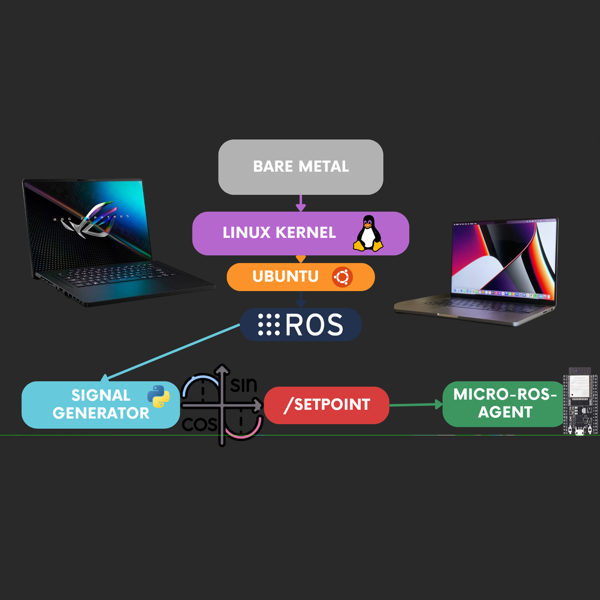

What is it about?

This was a school project in partnership with Manchester Robotics focused on mastering ROS2 for robotics applications. Our primary aim was to enable communication between a laptop and an embedded platform to facilitate real-time adjustments in motor speed control. We utilized a single type of controller, such as PI or PID, and employed various non-heuristic methods to determine the constants required for stability.
Our team performed exceptionally well, earning the honor of representing Tecnológico de Monterrey Campus Queretaro at the Manchester Robotics presentation. We received glowing feedback from the Manchester team, with just a couple of questions raised, indicating that our solution was highly regarded. It's evident that our hard work paid off, and we delivered one of the best performances.
You can see our presentation with Manchester Robotics in this video.